Note
This page was generated from Notebooks/flopy3_working_stack_demo.ipynb.
Interactive online version: 
FloPy working stack demo
A short demonstration of core flopy functionality
[1]:
from IPython.display import clear_output, display
import sys
from pathlib import Path
from tempfile import TemporaryDirectory
import numpy as np
import matplotlib as mpl
import matplotlib.pyplot as plt
import pandas as pd
proj_root = Path.cwd().parent.parent
# run installed version of flopy or add local path
try:
import flopy
except:
sys.path.append(proj_root)
import flopy
print(sys.version)
print("numpy version: {}".format(np.__version__))
print("matplotlib version: {}".format(mpl.__version__))
print("pandas version: {}".format(pd.__version__))
print("flopy version: {}".format(flopy.__version__))
3.10.10 | packaged by conda-forge | (main, Mar 24 2023, 20:08:06) [GCC 11.3.0]
numpy version: 1.24.3
matplotlib version: 3.7.1
pandas version: 2.0.1
flopy version: 3.3.7
Model Inputs
[2]:
# first lets load an existing model
model_ws = proj_root / "examples" / "data" / "freyberg_multilayer_transient"
ml = flopy.modflow.Modflow.load(
"freyberg.nam",
model_ws=model_ws,
verbose=False,
check=False,
exe_name="mfnwt",
)
[3]:
ml.modelgrid
[3]:
xll:622241.1904510253; yll:3343617.741737109; rotation:15.0; crs:EPSG:32614; units:meters; lenuni:2
Let’s looks at some plots
[4]:
ml.upw.plot();
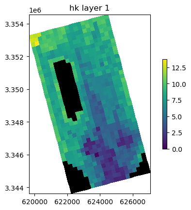
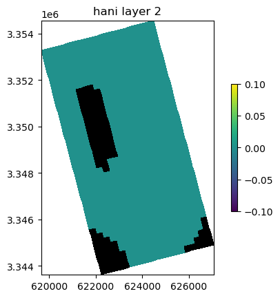
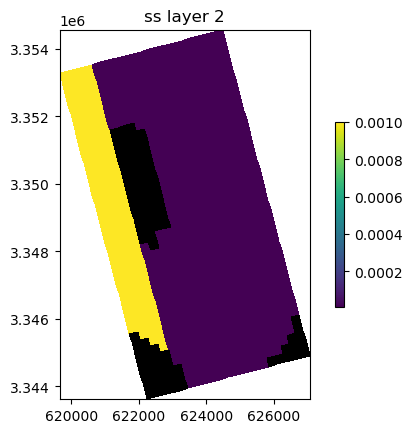
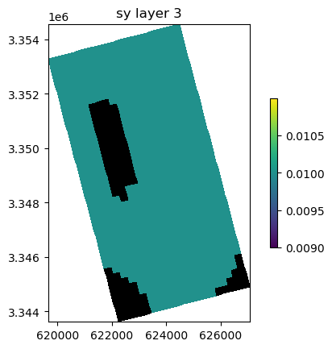
[5]:
ml.dis.plot();
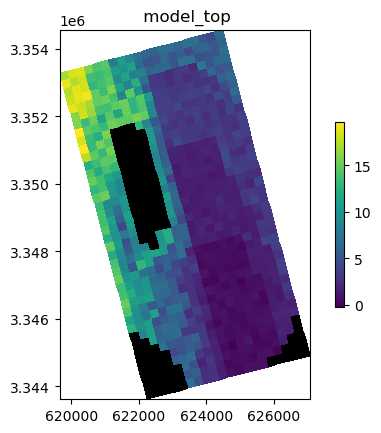
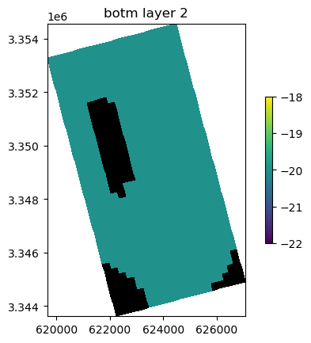
[6]:
ml.drn.plot(key="cond")
ml.drn.plot(key="elev");
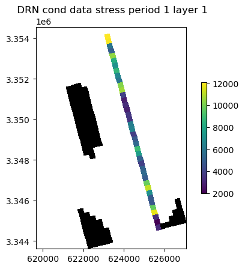
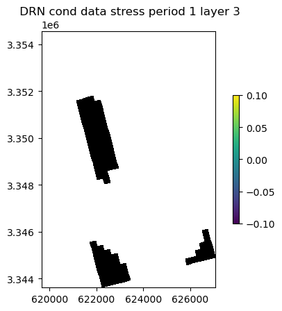
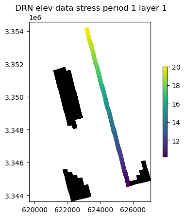
First create a temporary workspace.
[7]:
# create a temporary workspace
temp_dir = TemporaryDirectory()
workspace = Path(temp_dir.name)
Write a shapefile of the DIS package.
[8]:
# write the shapefile
ml.dis.export(workspace / "freyberg_dis.shp")
Write a netCDF file with all model inputs.
[9]:
ml.export(workspace / "freyberg.nc")
initialize_geometry::
model crs: EPSG:32614
initialize_geometry::nc_crs = EPSG:4326
transforming coordinates using = proj=pipeline step inv proj=utm zone=14 ellps=WGS84 step proj=unitconvert xy_in=rad xy_out=deg
[9]:
<flopy.export.netcdf.NetCdf at 0x7f316981df60>
Change model directory and external path, modify inputs and write new input files.
[10]:
ml.external_path = workspace / "ref"
ml.model_ws = workspace
ml.write_input()
Util2d:delr: resetting 'how' to external
Util2d:delc: resetting 'how' to external
Util2d:model_top: resetting 'how' to external
Util2d:botm_layer_0: resetting 'how' to external
Util2d:botm_layer_1: resetting 'how' to external
Util2d:botm_layer_2: resetting 'how' to external
Util2d:ibound_layer_0: resetting 'how' to external
Util2d:ibound_layer_1: resetting 'how' to external
Util2d:ibound_layer_2: resetting 'how' to external
Util2d:strt_layer_0: resetting 'how' to external
Util2d:strt_layer_1: resetting 'how' to external
Util2d:strt_layer_2: resetting 'how' to external
Util2d:rech_1: resetting 'how' to external
Util2d:rech_2: resetting 'how' to external
Util2d:rech_3: resetting 'how' to external
Util2d:rech_4: resetting 'how' to external
Util2d:rech_5: resetting 'how' to external
Util2d:rech_6: resetting 'how' to external
Util2d:rech_7: resetting 'how' to external
Util2d:rech_8: resetting 'how' to external
Util2d:rech_9: resetting 'how' to external
Util2d:rech_10: resetting 'how' to external
Util2d:rech_11: resetting 'how' to external
Util2d:rech_12: resetting 'how' to external
Util2d:rech_13: resetting 'how' to external
Util2d:rech_14: resetting 'how' to external
Util2d:rech_15: resetting 'how' to external
Util2d:rech_16: resetting 'how' to external
Util2d:rech_17: resetting 'how' to external
Util2d:rech_18: resetting 'how' to external
Util2d:rech_19: resetting 'how' to external
Util2d:rech_20: resetting 'how' to external
Util2d:rech_21: resetting 'how' to external
Util2d:rech_22: resetting 'how' to external
Util2d:rech_23: resetting 'how' to external
Util2d:rech_24: resetting 'how' to external
Util2d:rech_25: resetting 'how' to external
Util2d:rech_26: resetting 'how' to external
Util2d:rech_27: resetting 'how' to external
Util2d:rech_28: resetting 'how' to external
Util2d:rech_29: resetting 'how' to external
Util2d:rech_30: resetting 'how' to external
Util2d:rech_31: resetting 'how' to external
Util2d:rech_32: resetting 'how' to external
Util2d:rech_33: resetting 'how' to external
Util2d:rech_34: resetting 'how' to external
Util2d:rech_35: resetting 'how' to external
Util2d:rech_36: resetting 'how' to external
Util2d:rech_37: resetting 'how' to external
Util2d:rech_38: resetting 'how' to external
Util2d:rech_39: resetting 'how' to external
Util2d:rech_40: resetting 'how' to external
Util2d:rech_41: resetting 'how' to external
Util2d:rech_42: resetting 'how' to external
Util2d:rech_43: resetting 'how' to external
Util2d:rech_44: resetting 'how' to external
Util2d:rech_45: resetting 'how' to external
Util2d:rech_46: resetting 'how' to external
Util2d:rech_47: resetting 'how' to external
Util2d:rech_48: resetting 'how' to external
Util2d:rech_49: resetting 'how' to external
Util2d:rech_50: resetting 'how' to external
Util2d:rech_51: resetting 'how' to external
Util2d:rech_52: resetting 'how' to external
Util2d:rech_53: resetting 'how' to external
Util2d:rech_54: resetting 'how' to external
Util2d:rech_55: resetting 'how' to external
Util2d:rech_56: resetting 'how' to external
Util2d:rech_57: resetting 'how' to external
Util2d:rech_58: resetting 'how' to external
Util2d:rech_59: resetting 'how' to external
Util2d:rech_60: resetting 'how' to external
Util2d:rech_61: resetting 'how' to external
Util2d:rech_62: resetting 'how' to external
Util2d:rech_63: resetting 'how' to external
Util2d:rech_64: resetting 'how' to external
Util2d:rech_65: resetting 'how' to external
Util2d:rech_66: resetting 'how' to external
Util2d:rech_67: resetting 'how' to external
Util2d:rech_68: resetting 'how' to external
Util2d:rech_69: resetting 'how' to external
Util2d:rech_70: resetting 'how' to external
Util2d:rech_71: resetting 'how' to external
Util2d:rech_72: resetting 'how' to external
Util2d:rech_73: resetting 'how' to external
Util2d:rech_74: resetting 'how' to external
Util2d:rech_75: resetting 'how' to external
Util2d:rech_76: resetting 'how' to external
Util2d:rech_77: resetting 'how' to external
Util2d:rech_78: resetting 'how' to external
Util2d:rech_79: resetting 'how' to external
Util2d:rech_80: resetting 'how' to external
Util2d:rech_81: resetting 'how' to external
Util2d:rech_82: resetting 'how' to external
Util2d:rech_83: resetting 'how' to external
Util2d:rech_84: resetting 'how' to external
Util2d:rech_85: resetting 'how' to external
Util2d:rech_86: resetting 'how' to external
Util2d:rech_87: resetting 'how' to external
Util2d:rech_88: resetting 'how' to external
Util2d:rech_89: resetting 'how' to external
Util2d:rech_90: resetting 'how' to external
Util2d:rech_91: resetting 'how' to external
Util2d:rech_92: resetting 'how' to external
Util2d:rech_93: resetting 'how' to external
Util2d:rech_94: resetting 'how' to external
Util2d:rech_95: resetting 'how' to external
Util2d:rech_96: resetting 'how' to external
Util2d:rech_97: resetting 'how' to external
Util2d:rech_98: resetting 'how' to external
Util2d:rech_99: resetting 'how' to external
Util2d:rech_100: resetting 'how' to external
Util2d:rech_101: resetting 'how' to external
Util2d:rech_102: resetting 'how' to external
Util2d:rech_103: resetting 'how' to external
Util2d:rech_104: resetting 'how' to external
Util2d:rech_105: resetting 'how' to external
Util2d:rech_106: resetting 'how' to external
Util2d:rech_107: resetting 'how' to external
Util2d:rech_108: resetting 'how' to external
Util2d:rech_109: resetting 'how' to external
Util2d:rech_110: resetting 'how' to external
Util2d:rech_111: resetting 'how' to external
Util2d:rech_112: resetting 'how' to external
Util2d:rech_113: resetting 'how' to external
Util2d:rech_114: resetting 'how' to external
Util2d:rech_115: resetting 'how' to external
Util2d:rech_116: resetting 'how' to external
Util2d:rech_117: resetting 'how' to external
Util2d:rech_118: resetting 'how' to external
Util2d:rech_119: resetting 'how' to external
Util2d:rech_120: resetting 'how' to external
Util2d:rech_121: resetting 'how' to external
Util2d:rech_122: resetting 'how' to external
Util2d:rech_123: resetting 'how' to external
Util2d:rech_124: resetting 'how' to external
Util2d:rech_125: resetting 'how' to external
Util2d:rech_126: resetting 'how' to external
Util2d:rech_127: resetting 'how' to external
Util2d:rech_128: resetting 'how' to external
Util2d:rech_129: resetting 'how' to external
Util2d:rech_130: resetting 'how' to external
Util2d:rech_131: resetting 'how' to external
Util2d:rech_132: resetting 'how' to external
Util2d:rech_133: resetting 'how' to external
Util2d:rech_134: resetting 'how' to external
Util2d:rech_135: resetting 'how' to external
Util2d:rech_136: resetting 'how' to external
Util2d:rech_137: resetting 'how' to external
Util2d:rech_138: resetting 'how' to external
Util2d:rech_139: resetting 'how' to external
Util2d:rech_140: resetting 'how' to external
Util2d:rech_141: resetting 'how' to external
Util2d:rech_142: resetting 'how' to external
Util2d:rech_143: resetting 'how' to external
Util2d:rech_144: resetting 'how' to external
Util2d:rech_145: resetting 'how' to external
Util2d:rech_146: resetting 'how' to external
Util2d:rech_147: resetting 'how' to external
Util2d:rech_148: resetting 'how' to external
Util2d:rech_149: resetting 'how' to external
Util2d:rech_150: resetting 'how' to external
Util2d:rech_151: resetting 'how' to external
Util2d:rech_152: resetting 'how' to external
Util2d:rech_153: resetting 'how' to external
Util2d:rech_154: resetting 'how' to external
Util2d:rech_155: resetting 'how' to external
Util2d:rech_156: resetting 'how' to external
Util2d:rech_157: resetting 'how' to external
Util2d:rech_158: resetting 'how' to external
Util2d:rech_159: resetting 'how' to external
Util2d:rech_160: resetting 'how' to external
Util2d:rech_161: resetting 'how' to external
Util2d:rech_162: resetting 'how' to external
Util2d:rech_163: resetting 'how' to external
Util2d:rech_164: resetting 'how' to external
Util2d:rech_165: resetting 'how' to external
Util2d:rech_166: resetting 'how' to external
Util2d:rech_167: resetting 'how' to external
Util2d:rech_168: resetting 'how' to external
Util2d:rech_169: resetting 'how' to external
Util2d:rech_170: resetting 'how' to external
Util2d:rech_171: resetting 'how' to external
Util2d:rech_172: resetting 'how' to external
Util2d:rech_173: resetting 'how' to external
Util2d:rech_174: resetting 'how' to external
Util2d:rech_175: resetting 'how' to external
Util2d:rech_176: resetting 'how' to external
Util2d:rech_177: resetting 'how' to external
Util2d:rech_178: resetting 'how' to external
Util2d:rech_179: resetting 'how' to external
Util2d:rech_180: resetting 'how' to external
Util2d:rech_181: resetting 'how' to external
Util2d:rech_182: resetting 'how' to external
Util2d:rech_183: resetting 'how' to external
Util2d:rech_184: resetting 'how' to external
Util2d:rech_185: resetting 'how' to external
Util2d:rech_186: resetting 'how' to external
Util2d:rech_187: resetting 'how' to external
Util2d:rech_188: resetting 'how' to external
Util2d:rech_189: resetting 'how' to external
Util2d:rech_190: resetting 'how' to external
Util2d:rech_191: resetting 'how' to external
Util2d:rech_192: resetting 'how' to external
Util2d:rech_193: resetting 'how' to external
Util2d:rech_194: resetting 'how' to external
Util2d:rech_195: resetting 'how' to external
Util2d:rech_196: resetting 'how' to external
Util2d:rech_197: resetting 'how' to external
Util2d:rech_198: resetting 'how' to external
Util2d:rech_199: resetting 'how' to external
Util2d:rech_200: resetting 'how' to external
Util2d:rech_201: resetting 'how' to external
Util2d:rech_202: resetting 'how' to external
Util2d:rech_203: resetting 'how' to external
Util2d:rech_204: resetting 'how' to external
Util2d:rech_205: resetting 'how' to external
Util2d:rech_206: resetting 'how' to external
Util2d:rech_207: resetting 'how' to external
Util2d:rech_208: resetting 'how' to external
Util2d:rech_209: resetting 'how' to external
Util2d:rech_210: resetting 'how' to external
Util2d:rech_211: resetting 'how' to external
Util2d:rech_212: resetting 'how' to external
Util2d:rech_213: resetting 'how' to external
Util2d:rech_214: resetting 'how' to external
Util2d:rech_215: resetting 'how' to external
Util2d:rech_216: resetting 'how' to external
Util2d:rech_217: resetting 'how' to external
Util2d:rech_218: resetting 'how' to external
Util2d:rech_219: resetting 'how' to external
Util2d:rech_220: resetting 'how' to external
Util2d:rech_221: resetting 'how' to external
Util2d:rech_222: resetting 'how' to external
Util2d:rech_223: resetting 'how' to external
Util2d:rech_224: resetting 'how' to external
Util2d:rech_225: resetting 'how' to external
Util2d:rech_226: resetting 'how' to external
Util2d:rech_227: resetting 'how' to external
Util2d:rech_228: resetting 'how' to external
Util2d:rech_229: resetting 'how' to external
Util2d:rech_230: resetting 'how' to external
Util2d:rech_231: resetting 'how' to external
Util2d:rech_232: resetting 'how' to external
Util2d:rech_233: resetting 'how' to external
Util2d:rech_234: resetting 'how' to external
Util2d:rech_235: resetting 'how' to external
Util2d:rech_236: resetting 'how' to external
Util2d:rech_237: resetting 'how' to external
Util2d:rech_238: resetting 'how' to external
Util2d:rech_239: resetting 'how' to external
Util2d:rech_240: resetting 'how' to external
Util2d:rech_241: resetting 'how' to external
Util2d:rech_242: resetting 'how' to external
Util2d:rech_243: resetting 'how' to external
Util2d:rech_244: resetting 'how' to external
Util2d:rech_245: resetting 'how' to external
Util2d:rech_246: resetting 'how' to external
Util2d:rech_247: resetting 'how' to external
Util2d:rech_248: resetting 'how' to external
Util2d:rech_249: resetting 'how' to external
Util2d:rech_250: resetting 'how' to external
Util2d:rech_251: resetting 'how' to external
Util2d:rech_252: resetting 'how' to external
Util2d:rech_253: resetting 'how' to external
Util2d:rech_254: resetting 'how' to external
Util2d:rech_255: resetting 'how' to external
Util2d:rech_256: resetting 'how' to external
Util2d:rech_257: resetting 'how' to external
Util2d:rech_258: resetting 'how' to external
Util2d:rech_259: resetting 'how' to external
Util2d:rech_260: resetting 'how' to external
Util2d:rech_261: resetting 'how' to external
Util2d:rech_262: resetting 'how' to external
Util2d:rech_263: resetting 'how' to external
Util2d:rech_264: resetting 'how' to external
Util2d:rech_265: resetting 'how' to external
Util2d:rech_266: resetting 'how' to external
Util2d:rech_267: resetting 'how' to external
Util2d:rech_268: resetting 'how' to external
Util2d:rech_269: resetting 'how' to external
Util2d:rech_270: resetting 'how' to external
Util2d:rech_271: resetting 'how' to external
Util2d:rech_272: resetting 'how' to external
Util2d:rech_273: resetting 'how' to external
Util2d:rech_274: resetting 'how' to external
Util2d:rech_275: resetting 'how' to external
Util2d:rech_276: resetting 'how' to external
Util2d:rech_277: resetting 'how' to external
Util2d:rech_278: resetting 'how' to external
Util2d:rech_279: resetting 'how' to external
Util2d:rech_280: resetting 'how' to external
Util2d:rech_281: resetting 'how' to external
Util2d:rech_282: resetting 'how' to external
Util2d:rech_283: resetting 'how' to external
Util2d:rech_284: resetting 'how' to external
Util2d:rech_285: resetting 'how' to external
Util2d:rech_286: resetting 'how' to external
Util2d:rech_287: resetting 'how' to external
Util2d:rech_288: resetting 'how' to external
Util2d:rech_289: resetting 'how' to external
Util2d:rech_290: resetting 'how' to external
Util2d:rech_291: resetting 'how' to external
Util2d:rech_292: resetting 'how' to external
Util2d:rech_293: resetting 'how' to external
Util2d:rech_294: resetting 'how' to external
Util2d:rech_295: resetting 'how' to external
Util2d:rech_296: resetting 'how' to external
Util2d:rech_297: resetting 'how' to external
Util2d:rech_298: resetting 'how' to external
Util2d:rech_299: resetting 'how' to external
Util2d:rech_300: resetting 'how' to external
Util2d:rech_301: resetting 'how' to external
Util2d:rech_302: resetting 'how' to external
Util2d:rech_303: resetting 'how' to external
Util2d:rech_304: resetting 'how' to external
Util2d:rech_305: resetting 'how' to external
Util2d:rech_306: resetting 'how' to external
Util2d:rech_307: resetting 'how' to external
Util2d:rech_308: resetting 'how' to external
Util2d:rech_309: resetting 'how' to external
Util2d:rech_310: resetting 'how' to external
Util2d:rech_311: resetting 'how' to external
Util2d:rech_312: resetting 'how' to external
Util2d:rech_313: resetting 'how' to external
Util2d:rech_314: resetting 'how' to external
Util2d:rech_315: resetting 'how' to external
Util2d:rech_316: resetting 'how' to external
Util2d:rech_317: resetting 'how' to external
Util2d:rech_318: resetting 'how' to external
Util2d:rech_319: resetting 'how' to external
Util2d:rech_320: resetting 'how' to external
Util2d:rech_321: resetting 'how' to external
Util2d:rech_322: resetting 'how' to external
Util2d:rech_323: resetting 'how' to external
Util2d:rech_324: resetting 'how' to external
Util2d:rech_325: resetting 'how' to external
Util2d:rech_326: resetting 'how' to external
Util2d:rech_327: resetting 'how' to external
Util2d:rech_328: resetting 'how' to external
Util2d:rech_329: resetting 'how' to external
Util2d:rech_330: resetting 'how' to external
Util2d:rech_331: resetting 'how' to external
Util2d:rech_332: resetting 'how' to external
Util2d:rech_333: resetting 'how' to external
Util2d:rech_334: resetting 'how' to external
Util2d:rech_335: resetting 'how' to external
Util2d:rech_336: resetting 'how' to external
Util2d:rech_337: resetting 'how' to external
Util2d:rech_338: resetting 'how' to external
Util2d:rech_339: resetting 'how' to external
Util2d:rech_340: resetting 'how' to external
Util2d:rech_341: resetting 'how' to external
Util2d:rech_342: resetting 'how' to external
Util2d:rech_343: resetting 'how' to external
Util2d:rech_344: resetting 'how' to external
Util2d:rech_345: resetting 'how' to external
Util2d:rech_346: resetting 'how' to external
Util2d:rech_347: resetting 'how' to external
Util2d:rech_348: resetting 'how' to external
Util2d:rech_349: resetting 'how' to external
Util2d:rech_350: resetting 'how' to external
Util2d:rech_351: resetting 'how' to external
Util2d:rech_352: resetting 'how' to external
Util2d:rech_353: resetting 'how' to external
Util2d:rech_354: resetting 'how' to external
Util2d:rech_355: resetting 'how' to external
Util2d:rech_356: resetting 'how' to external
Util2d:rech_357: resetting 'how' to external
Util2d:rech_358: resetting 'how' to external
Util2d:rech_359: resetting 'how' to external
Util2d:rech_360: resetting 'how' to external
Util2d:rech_361: resetting 'how' to external
Util2d:rech_362: resetting 'how' to external
Util2d:rech_363: resetting 'how' to external
Util2d:rech_364: resetting 'how' to external
Util2d:rech_365: resetting 'how' to external
Util2d:rech_366: resetting 'how' to external
Util2d:rech_367: resetting 'how' to external
Util2d:rech_368: resetting 'how' to external
Util2d:rech_369: resetting 'how' to external
Util2d:rech_370: resetting 'how' to external
Util2d:rech_371: resetting 'how' to external
Util2d:rech_372: resetting 'how' to external
Util2d:rech_373: resetting 'how' to external
Util2d:rech_374: resetting 'how' to external
Util2d:rech_375: resetting 'how' to external
Util2d:rech_376: resetting 'how' to external
Util2d:rech_377: resetting 'how' to external
Util2d:rech_378: resetting 'how' to external
Util2d:rech_379: resetting 'how' to external
Util2d:rech_380: resetting 'how' to external
Util2d:rech_381: resetting 'how' to external
Util2d:rech_382: resetting 'how' to external
Util2d:rech_383: resetting 'how' to external
Util2d:rech_384: resetting 'how' to external
Util2d:rech_385: resetting 'how' to external
Util2d:rech_386: resetting 'how' to external
Util2d:rech_387: resetting 'how' to external
Util2d:rech_388: resetting 'how' to external
Util2d:rech_389: resetting 'how' to external
Util2d:rech_390: resetting 'how' to external
Util2d:rech_391: resetting 'how' to external
Util2d:rech_392: resetting 'how' to external
Util2d:rech_393: resetting 'how' to external
Util2d:rech_394: resetting 'how' to external
Util2d:rech_395: resetting 'how' to external
Util2d:rech_396: resetting 'how' to external
Util2d:rech_397: resetting 'how' to external
Util2d:rech_398: resetting 'how' to external
Util2d:rech_399: resetting 'how' to external
Util2d:rech_400: resetting 'how' to external
Util2d:rech_401: resetting 'how' to external
Util2d:rech_402: resetting 'how' to external
Util2d:rech_403: resetting 'how' to external
Util2d:rech_404: resetting 'how' to external
Util2d:rech_405: resetting 'how' to external
Util2d:rech_406: resetting 'how' to external
Util2d:rech_407: resetting 'how' to external
Util2d:rech_408: resetting 'how' to external
Util2d:rech_409: resetting 'how' to external
Util2d:rech_410: resetting 'how' to external
Util2d:rech_411: resetting 'how' to external
Util2d:rech_412: resetting 'how' to external
Util2d:rech_413: resetting 'how' to external
Util2d:rech_414: resetting 'how' to external
Util2d:rech_415: resetting 'how' to external
Util2d:rech_416: resetting 'how' to external
Util2d:rech_417: resetting 'how' to external
Util2d:rech_418: resetting 'how' to external
Util2d:rech_419: resetting 'how' to external
Util2d:rech_420: resetting 'how' to external
Util2d:rech_421: resetting 'how' to external
Util2d:rech_422: resetting 'how' to external
Util2d:rech_423: resetting 'how' to external
Util2d:rech_424: resetting 'how' to external
Util2d:rech_425: resetting 'how' to external
Util2d:rech_426: resetting 'how' to external
Util2d:rech_427: resetting 'how' to external
Util2d:rech_428: resetting 'how' to external
Util2d:rech_429: resetting 'how' to external
Util2d:rech_430: resetting 'how' to external
Util2d:rech_431: resetting 'how' to external
Util2d:rech_432: resetting 'how' to external
Util2d:rech_433: resetting 'how' to external
Util2d:rech_434: resetting 'how' to external
Util2d:rech_435: resetting 'how' to external
Util2d:rech_436: resetting 'how' to external
Util2d:rech_437: resetting 'how' to external
Util2d:rech_438: resetting 'how' to external
Util2d:rech_439: resetting 'how' to external
Util2d:rech_440: resetting 'how' to external
Util2d:rech_441: resetting 'how' to external
Util2d:rech_442: resetting 'how' to external
Util2d:rech_443: resetting 'how' to external
Util2d:rech_444: resetting 'how' to external
Util2d:rech_445: resetting 'how' to external
Util2d:rech_446: resetting 'how' to external
Util2d:rech_447: resetting 'how' to external
Util2d:rech_448: resetting 'how' to external
Util2d:rech_449: resetting 'how' to external
Util2d:rech_450: resetting 'how' to external
Util2d:rech_451: resetting 'how' to external
Util2d:rech_452: resetting 'how' to external
Util2d:rech_453: resetting 'how' to external
Util2d:rech_454: resetting 'how' to external
Util2d:rech_455: resetting 'how' to external
Util2d:rech_456: resetting 'how' to external
Util2d:rech_457: resetting 'how' to external
Util2d:rech_458: resetting 'how' to external
Util2d:rech_459: resetting 'how' to external
Util2d:rech_460: resetting 'how' to external
Util2d:rech_461: resetting 'how' to external
Util2d:rech_462: resetting 'how' to external
Util2d:rech_463: resetting 'how' to external
Util2d:rech_464: resetting 'how' to external
Util2d:rech_465: resetting 'how' to external
Util2d:rech_466: resetting 'how' to external
Util2d:rech_467: resetting 'how' to external
Util2d:rech_468: resetting 'how' to external
Util2d:rech_469: resetting 'how' to external
Util2d:rech_470: resetting 'how' to external
Util2d:rech_471: resetting 'how' to external
Util2d:rech_472: resetting 'how' to external
Util2d:rech_473: resetting 'how' to external
Util2d:rech_474: resetting 'how' to external
Util2d:rech_475: resetting 'how' to external
Util2d:rech_476: resetting 'how' to external
Util2d:rech_477: resetting 'how' to external
Util2d:rech_478: resetting 'how' to external
Util2d:rech_479: resetting 'how' to external
Util2d:rech_480: resetting 'how' to external
Util2d:rech_481: resetting 'how' to external
Util2d:rech_482: resetting 'how' to external
Util2d:rech_483: resetting 'how' to external
Util2d:rech_484: resetting 'how' to external
Util2d:rech_485: resetting 'how' to external
Util2d:rech_486: resetting 'how' to external
Util2d:rech_487: resetting 'how' to external
Util2d:rech_488: resetting 'how' to external
Util2d:rech_489: resetting 'how' to external
Util2d:rech_490: resetting 'how' to external
Util2d:rech_491: resetting 'how' to external
Util2d:rech_492: resetting 'how' to external
Util2d:rech_493: resetting 'how' to external
Util2d:rech_494: resetting 'how' to external
Util2d:rech_495: resetting 'how' to external
Util2d:rech_496: resetting 'how' to external
Util2d:rech_497: resetting 'how' to external
Util2d:rech_498: resetting 'how' to external
Util2d:rech_499: resetting 'how' to external
Util2d:rech_500: resetting 'how' to external
Util2d:rech_501: resetting 'how' to external
Util2d:rech_502: resetting 'how' to external
Util2d:rech_503: resetting 'how' to external
Util2d:rech_504: resetting 'how' to external
Util2d:rech_505: resetting 'how' to external
Util2d:rech_506: resetting 'how' to external
Util2d:rech_507: resetting 'how' to external
Util2d:rech_508: resetting 'how' to external
Util2d:rech_509: resetting 'how' to external
Util2d:rech_510: resetting 'how' to external
Util2d:rech_511: resetting 'how' to external
Util2d:rech_512: resetting 'how' to external
Util2d:rech_513: resetting 'how' to external
Util2d:rech_514: resetting 'how' to external
Util2d:rech_515: resetting 'how' to external
Util2d:rech_516: resetting 'how' to external
Util2d:rech_517: resetting 'how' to external
Util2d:rech_518: resetting 'how' to external
Util2d:rech_519: resetting 'how' to external
Util2d:rech_520: resetting 'how' to external
Util2d:rech_521: resetting 'how' to external
Util2d:rech_522: resetting 'how' to external
Util2d:rech_523: resetting 'how' to external
Util2d:rech_524: resetting 'how' to external
Util2d:rech_525: resetting 'how' to external
Util2d:rech_526: resetting 'how' to external
Util2d:rech_527: resetting 'how' to external
Util2d:rech_528: resetting 'how' to external
Util2d:rech_529: resetting 'how' to external
Util2d:rech_530: resetting 'how' to external
Util2d:rech_531: resetting 'how' to external
Util2d:rech_532: resetting 'how' to external
Util2d:rech_533: resetting 'how' to external
Util2d:rech_534: resetting 'how' to external
Util2d:rech_535: resetting 'how' to external
Util2d:rech_536: resetting 'how' to external
Util2d:rech_537: resetting 'how' to external
Util2d:rech_538: resetting 'how' to external
Util2d:rech_539: resetting 'how' to external
Util2d:rech_540: resetting 'how' to external
Util2d:rech_541: resetting 'how' to external
Util2d:rech_542: resetting 'how' to external
Util2d:rech_543: resetting 'how' to external
Util2d:rech_544: resetting 'how' to external
Util2d:rech_545: resetting 'how' to external
Util2d:rech_546: resetting 'how' to external
Util2d:rech_547: resetting 'how' to external
Util2d:rech_548: resetting 'how' to external
Util2d:rech_549: resetting 'how' to external
Util2d:rech_550: resetting 'how' to external
Util2d:rech_551: resetting 'how' to external
Util2d:rech_552: resetting 'how' to external
Util2d:rech_553: resetting 'how' to external
Util2d:rech_554: resetting 'how' to external
Util2d:rech_555: resetting 'how' to external
Util2d:rech_556: resetting 'how' to external
Util2d:rech_557: resetting 'how' to external
Util2d:rech_558: resetting 'how' to external
Util2d:rech_559: resetting 'how' to external
Util2d:rech_560: resetting 'how' to external
Util2d:rech_561: resetting 'how' to external
Util2d:rech_562: resetting 'how' to external
Util2d:rech_563: resetting 'how' to external
Util2d:rech_564: resetting 'how' to external
Util2d:rech_565: resetting 'how' to external
Util2d:rech_566: resetting 'how' to external
Util2d:rech_567: resetting 'how' to external
Util2d:rech_568: resetting 'how' to external
Util2d:rech_569: resetting 'how' to external
Util2d:rech_570: resetting 'how' to external
Util2d:rech_571: resetting 'how' to external
Util2d:rech_572: resetting 'how' to external
Util2d:rech_573: resetting 'how' to external
Util2d:rech_574: resetting 'how' to external
Util2d:rech_575: resetting 'how' to external
Util2d:rech_576: resetting 'how' to external
Util2d:rech_577: resetting 'how' to external
Util2d:rech_578: resetting 'how' to external
Util2d:rech_579: resetting 'how' to external
Util2d:rech_580: resetting 'how' to external
Util2d:rech_581: resetting 'how' to external
Util2d:rech_582: resetting 'how' to external
Util2d:rech_583: resetting 'how' to external
Util2d:rech_584: resetting 'how' to external
Util2d:rech_585: resetting 'how' to external
Util2d:rech_586: resetting 'how' to external
Util2d:rech_587: resetting 'how' to external
Util2d:rech_588: resetting 'how' to external
Util2d:rech_589: resetting 'how' to external
Util2d:rech_590: resetting 'how' to external
Util2d:rech_591: resetting 'how' to external
Util2d:rech_592: resetting 'how' to external
Util2d:rech_593: resetting 'how' to external
Util2d:rech_594: resetting 'how' to external
Util2d:rech_595: resetting 'how' to external
Util2d:rech_596: resetting 'how' to external
Util2d:rech_597: resetting 'how' to external
Util2d:rech_598: resetting 'how' to external
Util2d:rech_599: resetting 'how' to external
Util2d:rech_600: resetting 'how' to external
Util2d:rech_601: resetting 'how' to external
Util2d:rech_602: resetting 'how' to external
Util2d:rech_603: resetting 'how' to external
Util2d:rech_604: resetting 'how' to external
Util2d:rech_605: resetting 'how' to external
Util2d:rech_606: resetting 'how' to external
Util2d:rech_607: resetting 'how' to external
Util2d:rech_608: resetting 'how' to external
Util2d:rech_609: resetting 'how' to external
Util2d:rech_610: resetting 'how' to external
Util2d:rech_611: resetting 'how' to external
Util2d:rech_612: resetting 'how' to external
Util2d:rech_613: resetting 'how' to external
Util2d:rech_614: resetting 'how' to external
Util2d:rech_615: resetting 'how' to external
Util2d:rech_616: resetting 'how' to external
Util2d:rech_617: resetting 'how' to external
Util2d:rech_618: resetting 'how' to external
Util2d:rech_619: resetting 'how' to external
Util2d:rech_620: resetting 'how' to external
Util2d:rech_621: resetting 'how' to external
Util2d:rech_622: resetting 'how' to external
Util2d:rech_623: resetting 'how' to external
Util2d:rech_624: resetting 'how' to external
Util2d:rech_625: resetting 'how' to external
Util2d:rech_626: resetting 'how' to external
Util2d:rech_627: resetting 'how' to external
Util2d:rech_628: resetting 'how' to external
Util2d:rech_629: resetting 'how' to external
Util2d:rech_630: resetting 'how' to external
Util2d:rech_631: resetting 'how' to external
Util2d:rech_632: resetting 'how' to external
Util2d:rech_633: resetting 'how' to external
Util2d:rech_634: resetting 'how' to external
Util2d:rech_635: resetting 'how' to external
Util2d:rech_636: resetting 'how' to external
Util2d:rech_637: resetting 'how' to external
Util2d:rech_638: resetting 'how' to external
Util2d:rech_639: resetting 'how' to external
Util2d:rech_640: resetting 'how' to external
Util2d:rech_641: resetting 'how' to external
Util2d:rech_642: resetting 'how' to external
Util2d:rech_643: resetting 'how' to external
Util2d:rech_644: resetting 'how' to external
Util2d:rech_645: resetting 'how' to external
Util2d:rech_646: resetting 'how' to external
Util2d:rech_647: resetting 'how' to external
Util2d:rech_648: resetting 'how' to external
Util2d:rech_649: resetting 'how' to external
Util2d:rech_650: resetting 'how' to external
Util2d:rech_651: resetting 'how' to external
Util2d:rech_652: resetting 'how' to external
Util2d:rech_653: resetting 'how' to external
Util2d:rech_654: resetting 'how' to external
Util2d:rech_655: resetting 'how' to external
Util2d:rech_656: resetting 'how' to external
Util2d:rech_657: resetting 'how' to external
Util2d:rech_658: resetting 'how' to external
Util2d:rech_659: resetting 'how' to external
Util2d:rech_660: resetting 'how' to external
Util2d:rech_661: resetting 'how' to external
Util2d:rech_662: resetting 'how' to external
Util2d:rech_663: resetting 'how' to external
Util2d:rech_664: resetting 'how' to external
Util2d:rech_665: resetting 'how' to external
Util2d:rech_666: resetting 'how' to external
Util2d:rech_667: resetting 'how' to external
Util2d:rech_668: resetting 'how' to external
Util2d:rech_669: resetting 'how' to external
Util2d:rech_670: resetting 'how' to external
Util2d:rech_671: resetting 'how' to external
Util2d:rech_672: resetting 'how' to external
Util2d:rech_673: resetting 'how' to external
Util2d:rech_674: resetting 'how' to external
Util2d:rech_675: resetting 'how' to external
Util2d:rech_676: resetting 'how' to external
Util2d:rech_677: resetting 'how' to external
Util2d:rech_678: resetting 'how' to external
Util2d:rech_679: resetting 'how' to external
Util2d:rech_680: resetting 'how' to external
Util2d:rech_681: resetting 'how' to external
Util2d:rech_682: resetting 'how' to external
Util2d:rech_683: resetting 'how' to external
Util2d:rech_684: resetting 'how' to external
Util2d:rech_685: resetting 'how' to external
Util2d:rech_686: resetting 'how' to external
Util2d:rech_687: resetting 'how' to external
Util2d:rech_688: resetting 'how' to external
Util2d:rech_689: resetting 'how' to external
Util2d:rech_690: resetting 'how' to external
Util2d:rech_691: resetting 'how' to external
Util2d:rech_692: resetting 'how' to external
Util2d:rech_693: resetting 'how' to external
Util2d:rech_694: resetting 'how' to external
Util2d:rech_695: resetting 'how' to external
Util2d:rech_696: resetting 'how' to external
Util2d:rech_697: resetting 'how' to external
Util2d:rech_698: resetting 'how' to external
Util2d:rech_699: resetting 'how' to external
Util2d:rech_700: resetting 'how' to external
Util2d:rech_701: resetting 'how' to external
Util2d:rech_702: resetting 'how' to external
Util2d:rech_703: resetting 'how' to external
Util2d:rech_704: resetting 'how' to external
Util2d:rech_705: resetting 'how' to external
Util2d:rech_706: resetting 'how' to external
Util2d:rech_707: resetting 'how' to external
Util2d:rech_708: resetting 'how' to external
Util2d:rech_709: resetting 'how' to external
Util2d:rech_710: resetting 'how' to external
Util2d:rech_711: resetting 'how' to external
Util2d:rech_712: resetting 'how' to external
Util2d:rech_713: resetting 'how' to external
Util2d:rech_714: resetting 'how' to external
Util2d:rech_715: resetting 'how' to external
Util2d:rech_716: resetting 'how' to external
Util2d:rech_717: resetting 'how' to external
Util2d:rech_718: resetting 'how' to external
Util2d:rech_719: resetting 'how' to external
Util2d:rech_720: resetting 'how' to external
Util2d:rech_721: resetting 'how' to external
Util2d:rech_722: resetting 'how' to external
Util2d:rech_723: resetting 'how' to external
Util2d:rech_724: resetting 'how' to external
Util2d:rech_725: resetting 'how' to external
Util2d:rech_726: resetting 'how' to external
Util2d:rech_727: resetting 'how' to external
Util2d:rech_728: resetting 'how' to external
Util2d:rech_729: resetting 'how' to external
Util2d:rech_730: resetting 'how' to external
Util2d:rech_731: resetting 'how' to external
Util2d:rech_732: resetting 'how' to external
Util2d:rech_733: resetting 'how' to external
Util2d:rech_734: resetting 'how' to external
Util2d:rech_735: resetting 'how' to external
Util2d:rech_736: resetting 'how' to external
Util2d:rech_737: resetting 'how' to external
Util2d:rech_738: resetting 'how' to external
Util2d:rech_739: resetting 'how' to external
Util2d:rech_740: resetting 'how' to external
Util2d:rech_741: resetting 'how' to external
Util2d:rech_742: resetting 'how' to external
Util2d:rech_743: resetting 'how' to external
Util2d:rech_744: resetting 'how' to external
Util2d:rech_745: resetting 'how' to external
Util2d:rech_746: resetting 'how' to external
Util2d:rech_747: resetting 'how' to external
Util2d:rech_748: resetting 'how' to external
Util2d:rech_749: resetting 'how' to external
Util2d:rech_750: resetting 'how' to external
Util2d:rech_751: resetting 'how' to external
Util2d:rech_752: resetting 'how' to external
Util2d:rech_753: resetting 'how' to external
Util2d:rech_754: resetting 'how' to external
Util2d:rech_755: resetting 'how' to external
Util2d:rech_756: resetting 'how' to external
Util2d:rech_757: resetting 'how' to external
Util2d:rech_758: resetting 'how' to external
Util2d:rech_759: resetting 'how' to external
Util2d:rech_760: resetting 'how' to external
Util2d:rech_761: resetting 'how' to external
Util2d:rech_762: resetting 'how' to external
Util2d:rech_763: resetting 'how' to external
Util2d:rech_764: resetting 'how' to external
Util2d:rech_765: resetting 'how' to external
Util2d:rech_766: resetting 'how' to external
Util2d:rech_767: resetting 'how' to external
Util2d:rech_768: resetting 'how' to external
Util2d:rech_769: resetting 'how' to external
Util2d:rech_770: resetting 'how' to external
Util2d:rech_771: resetting 'how' to external
Util2d:rech_772: resetting 'how' to external
Util2d:rech_773: resetting 'how' to external
Util2d:rech_774: resetting 'how' to external
Util2d:rech_775: resetting 'how' to external
Util2d:rech_776: resetting 'how' to external
Util2d:rech_777: resetting 'how' to external
Util2d:rech_778: resetting 'how' to external
Util2d:rech_779: resetting 'how' to external
Util2d:rech_780: resetting 'how' to external
Util2d:rech_781: resetting 'how' to external
Util2d:rech_782: resetting 'how' to external
Util2d:rech_783: resetting 'how' to external
Util2d:rech_784: resetting 'how' to external
Util2d:rech_785: resetting 'how' to external
Util2d:rech_786: resetting 'how' to external
Util2d:rech_787: resetting 'how' to external
Util2d:rech_788: resetting 'how' to external
Util2d:rech_789: resetting 'how' to external
Util2d:rech_790: resetting 'how' to external
Util2d:rech_791: resetting 'how' to external
Util2d:rech_792: resetting 'how' to external
Util2d:rech_793: resetting 'how' to external
Util2d:rech_794: resetting 'how' to external
Util2d:rech_795: resetting 'how' to external
Util2d:rech_796: resetting 'how' to external
Util2d:rech_797: resetting 'how' to external
Util2d:rech_798: resetting 'how' to external
Util2d:rech_799: resetting 'how' to external
Util2d:rech_800: resetting 'how' to external
Util2d:rech_801: resetting 'how' to external
Util2d:rech_802: resetting 'how' to external
Util2d:rech_803: resetting 'how' to external
Util2d:rech_804: resetting 'how' to external
Util2d:rech_805: resetting 'how' to external
Util2d:rech_806: resetting 'how' to external
Util2d:rech_807: resetting 'how' to external
Util2d:rech_808: resetting 'how' to external
Util2d:rech_809: resetting 'how' to external
Util2d:rech_810: resetting 'how' to external
Util2d:rech_811: resetting 'how' to external
Util2d:rech_812: resetting 'how' to external
Util2d:rech_813: resetting 'how' to external
Util2d:rech_814: resetting 'how' to external
Util2d:rech_815: resetting 'how' to external
Util2d:rech_816: resetting 'how' to external
Util2d:rech_817: resetting 'how' to external
Util2d:rech_818: resetting 'how' to external
Util2d:rech_819: resetting 'how' to external
Util2d:rech_820: resetting 'how' to external
Util2d:rech_821: resetting 'how' to external
Util2d:rech_822: resetting 'how' to external
Util2d:rech_823: resetting 'how' to external
Util2d:rech_824: resetting 'how' to external
Util2d:rech_825: resetting 'how' to external
Util2d:rech_826: resetting 'how' to external
Util2d:rech_827: resetting 'how' to external
Util2d:rech_828: resetting 'how' to external
Util2d:rech_829: resetting 'how' to external
Util2d:rech_830: resetting 'how' to external
Util2d:rech_831: resetting 'how' to external
Util2d:rech_832: resetting 'how' to external
Util2d:rech_833: resetting 'how' to external
Util2d:rech_834: resetting 'how' to external
Util2d:rech_835: resetting 'how' to external
Util2d:rech_836: resetting 'how' to external
Util2d:rech_837: resetting 'how' to external
Util2d:rech_838: resetting 'how' to external
Util2d:rech_839: resetting 'how' to external
Util2d:rech_840: resetting 'how' to external
Util2d:rech_841: resetting 'how' to external
Util2d:rech_842: resetting 'how' to external
Util2d:rech_843: resetting 'how' to external
Util2d:rech_844: resetting 'how' to external
Util2d:rech_845: resetting 'how' to external
Util2d:rech_846: resetting 'how' to external
Util2d:rech_847: resetting 'how' to external
Util2d:rech_848: resetting 'how' to external
Util2d:rech_849: resetting 'how' to external
Util2d:rech_850: resetting 'how' to external
Util2d:rech_851: resetting 'how' to external
Util2d:rech_852: resetting 'how' to external
Util2d:rech_853: resetting 'how' to external
Util2d:rech_854: resetting 'how' to external
Util2d:rech_855: resetting 'how' to external
Util2d:rech_856: resetting 'how' to external
Util2d:rech_857: resetting 'how' to external
Util2d:rech_858: resetting 'how' to external
Util2d:rech_859: resetting 'how' to external
Util2d:rech_860: resetting 'how' to external
Util2d:rech_861: resetting 'how' to external
Util2d:rech_862: resetting 'how' to external
Util2d:rech_863: resetting 'how' to external
Util2d:rech_864: resetting 'how' to external
Util2d:rech_865: resetting 'how' to external
Util2d:rech_866: resetting 'how' to external
Util2d:rech_867: resetting 'how' to external
Util2d:rech_868: resetting 'how' to external
Util2d:rech_869: resetting 'how' to external
Util2d:rech_870: resetting 'how' to external
Util2d:rech_871: resetting 'how' to external
Util2d:rech_872: resetting 'how' to external
Util2d:rech_873: resetting 'how' to external
Util2d:rech_874: resetting 'how' to external
Util2d:rech_875: resetting 'how' to external
Util2d:rech_876: resetting 'how' to external
Util2d:rech_877: resetting 'how' to external
Util2d:rech_878: resetting 'how' to external
Util2d:rech_879: resetting 'how' to external
Util2d:rech_880: resetting 'how' to external
Util2d:rech_881: resetting 'how' to external
Util2d:rech_882: resetting 'how' to external
Util2d:rech_883: resetting 'how' to external
Util2d:rech_884: resetting 'how' to external
Util2d:rech_885: resetting 'how' to external
Util2d:rech_886: resetting 'how' to external
Util2d:rech_887: resetting 'how' to external
Util2d:rech_888: resetting 'how' to external
Util2d:rech_889: resetting 'how' to external
Util2d:rech_890: resetting 'how' to external
Util2d:rech_891: resetting 'how' to external
Util2d:rech_892: resetting 'how' to external
Util2d:rech_893: resetting 'how' to external
Util2d:rech_894: resetting 'how' to external
Util2d:rech_895: resetting 'how' to external
Util2d:rech_896: resetting 'how' to external
Util2d:rech_897: resetting 'how' to external
Util2d:rech_898: resetting 'how' to external
Util2d:rech_899: resetting 'how' to external
Util2d:rech_900: resetting 'how' to external
Util2d:rech_901: resetting 'how' to external
Util2d:rech_902: resetting 'how' to external
Util2d:rech_903: resetting 'how' to external
Util2d:rech_904: resetting 'how' to external
Util2d:rech_905: resetting 'how' to external
Util2d:rech_906: resetting 'how' to external
Util2d:rech_907: resetting 'how' to external
Util2d:rech_908: resetting 'how' to external
Util2d:rech_909: resetting 'how' to external
Util2d:rech_910: resetting 'how' to external
Util2d:rech_911: resetting 'how' to external
Util2d:rech_912: resetting 'how' to external
Util2d:rech_913: resetting 'how' to external
Util2d:rech_914: resetting 'how' to external
Util2d:rech_915: resetting 'how' to external
Util2d:rech_916: resetting 'how' to external
Util2d:rech_917: resetting 'how' to external
Util2d:rech_918: resetting 'how' to external
Util2d:rech_919: resetting 'how' to external
Util2d:rech_920: resetting 'how' to external
Util2d:rech_921: resetting 'how' to external
Util2d:rech_922: resetting 'how' to external
Util2d:rech_923: resetting 'how' to external
Util2d:rech_924: resetting 'how' to external
Util2d:rech_925: resetting 'how' to external
Util2d:rech_926: resetting 'how' to external
Util2d:rech_927: resetting 'how' to external
Util2d:rech_928: resetting 'how' to external
Util2d:rech_929: resetting 'how' to external
Util2d:rech_930: resetting 'how' to external
Util2d:rech_931: resetting 'how' to external
Util2d:rech_932: resetting 'how' to external
Util2d:rech_933: resetting 'how' to external
Util2d:rech_934: resetting 'how' to external
Util2d:rech_935: resetting 'how' to external
Util2d:rech_936: resetting 'how' to external
Util2d:rech_937: resetting 'how' to external
Util2d:rech_938: resetting 'how' to external
Util2d:rech_939: resetting 'how' to external
Util2d:rech_940: resetting 'how' to external
Util2d:rech_941: resetting 'how' to external
Util2d:rech_942: resetting 'how' to external
Util2d:rech_943: resetting 'how' to external
Util2d:rech_944: resetting 'how' to external
Util2d:rech_945: resetting 'how' to external
Util2d:rech_946: resetting 'how' to external
Util2d:rech_947: resetting 'how' to external
Util2d:rech_948: resetting 'how' to external
Util2d:rech_949: resetting 'how' to external
Util2d:rech_950: resetting 'how' to external
Util2d:rech_951: resetting 'how' to external
Util2d:rech_952: resetting 'how' to external
Util2d:rech_953: resetting 'how' to external
Util2d:rech_954: resetting 'how' to external
Util2d:rech_955: resetting 'how' to external
Util2d:rech_956: resetting 'how' to external
Util2d:rech_957: resetting 'how' to external
Util2d:rech_958: resetting 'how' to external
Util2d:rech_959: resetting 'how' to external
Util2d:rech_960: resetting 'how' to external
Util2d:rech_961: resetting 'how' to external
Util2d:rech_962: resetting 'how' to external
Util2d:rech_963: resetting 'how' to external
Util2d:rech_964: resetting 'how' to external
Util2d:rech_965: resetting 'how' to external
Util2d:rech_966: resetting 'how' to external
Util2d:rech_967: resetting 'how' to external
Util2d:rech_968: resetting 'how' to external
Util2d:rech_969: resetting 'how' to external
Util2d:rech_970: resetting 'how' to external
Util2d:rech_971: resetting 'how' to external
Util2d:rech_972: resetting 'how' to external
Util2d:rech_973: resetting 'how' to external
Util2d:rech_974: resetting 'how' to external
Util2d:rech_975: resetting 'how' to external
Util2d:rech_976: resetting 'how' to external
Util2d:rech_977: resetting 'how' to external
Util2d:rech_978: resetting 'how' to external
Util2d:rech_979: resetting 'how' to external
Util2d:rech_980: resetting 'how' to external
Util2d:rech_981: resetting 'how' to external
Util2d:rech_982: resetting 'how' to external
Util2d:rech_983: resetting 'how' to external
Util2d:rech_984: resetting 'how' to external
Util2d:rech_985: resetting 'how' to external
Util2d:rech_986: resetting 'how' to external
Util2d:rech_987: resetting 'how' to external
Util2d:rech_988: resetting 'how' to external
Util2d:rech_989: resetting 'how' to external
Util2d:rech_990: resetting 'how' to external
Util2d:rech_991: resetting 'how' to external
Util2d:rech_992: resetting 'how' to external
Util2d:rech_993: resetting 'how' to external
Util2d:rech_994: resetting 'how' to external
Util2d:rech_995: resetting 'how' to external
Util2d:rech_996: resetting 'how' to external
Util2d:rech_997: resetting 'how' to external
Util2d:rech_998: resetting 'how' to external
Util2d:rech_999: resetting 'how' to external
Util2d:rech_1000: resetting 'how' to external
Util2d:rech_1001: resetting 'how' to external
Util2d:rech_1002: resetting 'how' to external
Util2d:rech_1003: resetting 'how' to external
Util2d:rech_1004: resetting 'how' to external
Util2d:rech_1005: resetting 'how' to external
Util2d:rech_1006: resetting 'how' to external
Util2d:rech_1007: resetting 'how' to external
Util2d:rech_1008: resetting 'how' to external
Util2d:rech_1009: resetting 'how' to external
Util2d:rech_1010: resetting 'how' to external
Util2d:rech_1011: resetting 'how' to external
Util2d:rech_1012: resetting 'how' to external
Util2d:rech_1013: resetting 'how' to external
Util2d:rech_1014: resetting 'how' to external
Util2d:rech_1015: resetting 'how' to external
Util2d:rech_1016: resetting 'how' to external
Util2d:rech_1017: resetting 'how' to external
Util2d:rech_1018: resetting 'how' to external
Util2d:rech_1019: resetting 'how' to external
Util2d:rech_1020: resetting 'how' to external
Util2d:rech_1021: resetting 'how' to external
Util2d:rech_1022: resetting 'how' to external
Util2d:rech_1023: resetting 'how' to external
Util2d:rech_1024: resetting 'how' to external
Util2d:rech_1025: resetting 'how' to external
Util2d:rech_1026: resetting 'how' to external
Util2d:rech_1027: resetting 'how' to external
Util2d:rech_1028: resetting 'how' to external
Util2d:rech_1029: resetting 'how' to external
Util2d:rech_1030: resetting 'how' to external
Util2d:rech_1031: resetting 'how' to external
Util2d:rech_1032: resetting 'how' to external
Util2d:rech_1033: resetting 'how' to external
Util2d:rech_1034: resetting 'how' to external
Util2d:rech_1035: resetting 'how' to external
Util2d:rech_1036: resetting 'how' to external
Util2d:rech_1037: resetting 'how' to external
Util2d:rech_1038: resetting 'how' to external
Util2d:rech_1039: resetting 'how' to external
Util2d:rech_1040: resetting 'how' to external
Util2d:rech_1041: resetting 'how' to external
Util2d:rech_1042: resetting 'how' to external
Util2d:rech_1043: resetting 'how' to external
Util2d:rech_1044: resetting 'how' to external
Util2d:rech_1045: resetting 'how' to external
Util2d:rech_1046: resetting 'how' to external
Util2d:rech_1047: resetting 'how' to external
Util2d:rech_1048: resetting 'how' to external
Util2d:rech_1049: resetting 'how' to external
Util2d:rech_1050: resetting 'how' to external
Util2d:rech_1051: resetting 'how' to external
Util2d:rech_1052: resetting 'how' to external
Util2d:rech_1053: resetting 'how' to external
Util2d:rech_1054: resetting 'how' to external
Util2d:rech_1055: resetting 'how' to external
Util2d:rech_1056: resetting 'how' to external
Util2d:rech_1057: resetting 'how' to external
Util2d:rech_1058: resetting 'how' to external
Util2d:rech_1059: resetting 'how' to external
Util2d:rech_1060: resetting 'how' to external
Util2d:rech_1061: resetting 'how' to external
Util2d:rech_1062: resetting 'how' to external
Util2d:rech_1063: resetting 'how' to external
Util2d:rech_1064: resetting 'how' to external
Util2d:rech_1065: resetting 'how' to external
Util2d:rech_1066: resetting 'how' to external
Util2d:rech_1067: resetting 'how' to external
Util2d:rech_1068: resetting 'how' to external
Util2d:rech_1069: resetting 'how' to external
Util2d:rech_1070: resetting 'how' to external
Util2d:rech_1071: resetting 'how' to external
Util2d:rech_1072: resetting 'how' to external
Util2d:rech_1073: resetting 'how' to external
Util2d:rech_1074: resetting 'how' to external
Util2d:rech_1075: resetting 'how' to external
Util2d:rech_1076: resetting 'how' to external
Util2d:rech_1077: resetting 'how' to external
Util2d:rech_1078: resetting 'how' to external
Util2d:rech_1079: resetting 'how' to external
Util2d:rech_1080: resetting 'how' to external
Util2d:rech_1081: resetting 'how' to external
Util2d:rech_1082: resetting 'how' to external
Util2d:rech_1083: resetting 'how' to external
Util2d:rech_1084: resetting 'how' to external
Util2d:rech_1085: resetting 'how' to external
Util2d:rech_1086: resetting 'how' to external
Util2d:rech_1087: resetting 'how' to external
Util2d:rech_1088: resetting 'how' to external
Util2d:rech_1089: resetting 'how' to external
Util2d:rech_1090: resetting 'how' to external
Util2d:rech_1091: resetting 'how' to external
Util2d:rech_1092: resetting 'how' to external
Util2d:rech_1093: resetting 'how' to external
Util2d:rech_1094: resetting 'how' to external
Util2d:rech_1095: resetting 'how' to external
Util2d:rech_1096: resetting 'how' to external
Util2d:rech_1097: resetting 'how' to external
Util2d:hk: resetting 'how' to external
Util2d:vk: resetting 'how' to external
Util2d:ss: resetting 'how' to external
Util2d:sy: resetting 'how' to external
Util2d:hk: resetting 'how' to external
Util2d:vk: resetting 'how' to external
Util2d:ss: resetting 'how' to external
Util2d:sy: resetting 'how' to external
Util2d:hk: resetting 'how' to external
Util2d:vk: resetting 'how' to external
Util2d:ss: resetting 'how' to external
Util2d:sy: resetting 'how' to external
Now run the model.
[11]:
ml.run_model(silent=True)
[11]:
(True, [])
Inspecting outputs
First, let’s look at the list file. The list file summarizes the model’s results.
[12]:
mfl = flopy.utils.MfListBudget(model_ws / "freyberg.list")
df_flux, df_vol = mfl.get_dataframes(start_datetime="10-21-2015")
df_flux
[12]:
| STORAGE_IN | CONSTANT_HEAD_IN | WELLS_IN | DRAINS_IN | RECHARGE_IN | TOTAL_IN | STORAGE_OUT | CONSTANT_HEAD_OUT | WELLS_OUT | DRAINS_OUT | RECHARGE_OUT | TOTAL_OUT | IN-OUT | PERCENT_DISCREPANCY | |
|---|---|---|---|---|---|---|---|---|---|---|---|---|---|---|
| 2015-10-22 | 0.000000 | 0.000000 | 0.0 | 0.0 | 6276.861816 | 6276.861816 | 0.000000 | 2446.318848 | 0.000000 | 3830.650146 | 0.0 | 6276.968750 | -0.106900 | -0.0 |
| 2015-10-23 | 635.447998 | 0.000000 | 0.0 | 0.0 | 6428.198730 | 7063.646484 | 31.594000 | 2430.337891 | 1302.403198 | 3299.415039 | 0.0 | 7063.750000 | -0.103500 | -0.0 |
| 2015-10-24 | 1361.814941 | 0.000000 | 0.0 | 0.0 | 5397.295898 | 6759.110840 | 9.152200 | 2369.628174 | 1618.676392 | 2761.639648 | 0.0 | 6759.096191 | 0.014648 | 0.0 |
| 2015-10-25 | 677.577209 | 0.000000 | 0.0 | 0.0 | 5931.377441 | 6608.954590 | 180.233307 | 2353.585449 | 1498.694702 | 2576.461670 | 0.0 | 6608.975586 | -0.020996 | -0.0 |
| 2015-10-26 | 697.818298 | 0.000000 | 0.0 | 0.0 | 8378.572266 | 9076.390625 | 1051.897461 | 2417.248291 | 3119.501953 | 2487.737305 | 0.0 | 9076.384766 | 0.005859 | 0.0 |
| ... | ... | ... | ... | ... | ... | ... | ... | ... | ... | ... | ... | ... | ... | ... |
| 2018-10-18 | 1298.433350 | 23.293699 | 0.0 | 0.0 | 4240.286133 | 5562.013184 | 1606.280396 | 1909.538574 | 1930.483154 | 115.724899 | 0.0 | 5562.026855 | -0.013672 | -0.0 |
| 2018-10-19 | 920.468689 | 25.997499 | 0.0 | 0.0 | 4082.749512 | 5029.215820 | 1659.194702 | 1892.605835 | 1279.166382 | 198.258896 | 0.0 | 5029.225586 | -0.009766 | -0.0 |
| 2018-10-20 | 496.671387 | 20.047001 | 0.0 | 0.0 | 5053.779297 | 5570.497559 | 2428.291016 | 1933.045898 | 794.582886 | 414.594513 | 0.0 | 5570.514648 | -0.017090 | -0.0 |
| 2018-10-21 | 230.320999 | 9.045700 | 0.0 | 0.0 | 6168.920410 | 6408.287109 | 2335.759521 | 2006.124268 | 1373.782593 | 692.638123 | 0.0 | 6408.304688 | -0.017578 | -0.0 |
| 2018-10-22 | 0.000000 | 317.783386 | 0.0 | 0.0 | 5190.390625 | 5508.173828 | 0.000000 | 745.363403 | 4762.799805 | 0.000000 | 0.0 | 5508.163086 | 0.010742 | 0.0 |
1097 rows × 14 columns
[13]:
groups = df_flux.groupby(lambda x: x.split("_")[-1], axis=1).groups
df_flux_in = df_flux.loc[:, groups["IN"]]
df_flux_in.columns = df_flux_in.columns.map(lambda x: x.split("_")[0])
df_flux_out = df_flux.loc[:, groups["OUT"]]
df_flux_out.columns = df_flux_out.columns.map(lambda x: x.split("_")[0])
df_flux_delta = df_flux_in - df_flux_out
df_flux_delta.iloc[-1, :].plot(kind="bar", figsize=(10, 10), grid=True);
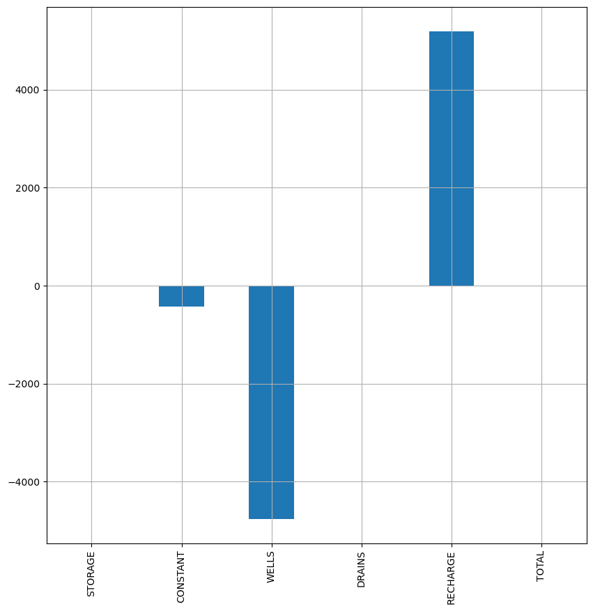
Now let’s look at the simulated head.
[14]:
# if you pass the model instance, then the plots will be offset and rotated
h = flopy.utils.HeadFile(model_ws / "freyberg.hds", model=ml)
h.times
[14]:
[1.0,
2.0,
3.0,
4.0,
5.0,
6.0,
7.0,
8.0,
9.0,
10.0,
11.0,
12.0,
13.0,
14.0,
15.0,
16.0,
17.0,
18.0,
19.0,
20.0,
21.0,
22.0,
23.0,
24.0,
25.0,
26.0,
27.0,
28.0,
29.0,
30.0,
31.0,
32.0,
33.0,
34.0,
35.0,
36.0,
37.0,
38.0,
39.0,
40.0,
41.0,
42.0,
43.0,
44.0,
45.0,
46.0,
47.0,
48.0,
49.0,
50.0,
51.0,
52.0,
53.0,
54.0,
55.0,
56.0,
57.0,
58.0,
59.0,
60.0,
61.0,
62.0,
63.0,
64.0,
65.0,
66.0,
67.0,
68.0,
69.0,
70.0,
71.0,
72.0,
73.0,
74.0,
75.0,
76.0,
77.0,
78.0,
79.0,
80.0,
81.0,
82.0,
83.0,
84.0,
85.0,
86.0,
87.0,
88.0,
89.0,
90.0,
91.0,
92.0,
93.0,
94.0,
95.0,
96.0,
97.0,
98.0,
99.0,
100.0,
101.0,
102.0,
103.0,
104.0,
105.0,
106.0,
107.0,
108.0,
109.0,
110.0,
111.0,
112.0,
113.0,
114.0,
115.0,
116.0,
117.0,
118.0,
119.0,
120.0,
121.0,
122.0,
123.0,
124.0,
125.0,
126.0,
127.0,
128.0,
129.0,
130.0,
131.0,
132.0,
133.0,
134.0,
135.0,
136.0,
137.0,
138.0,
139.0,
140.0,
141.0,
142.0,
143.0,
144.0,
145.0,
146.0,
147.0,
148.0,
149.0,
150.0,
151.0,
152.0,
153.0,
154.0,
155.0,
156.0,
157.0,
158.0,
159.0,
160.0,
161.0,
162.0,
163.0,
164.0,
165.0,
166.0,
167.0,
168.0,
169.0,
170.0,
171.0,
172.0,
173.0,
174.0,
175.0,
176.0,
177.0,
178.0,
179.0,
180.0,
181.0,
182.0,
183.0,
184.0,
185.0,
186.0,
187.0,
188.0,
189.0,
190.0,
191.0,
192.0,
193.0,
194.0,
195.0,
196.0,
197.0,
198.0,
199.0,
200.0,
201.0,
202.0,
203.0,
204.0,
205.0,
206.0,
207.0,
208.0,
209.0,
210.0,
211.0,
212.0,
213.0,
214.0,
215.0,
216.0,
217.0,
218.0,
219.0,
220.0,
221.0,
222.0,
223.0,
224.0,
225.0,
226.0,
227.0,
228.0,
229.0,
230.0,
231.0,
232.0,
233.0,
234.0,
235.0,
236.0,
237.0,
238.0,
239.0,
240.0,
241.0,
242.0,
243.0,
244.0,
245.0,
246.0,
247.0,
248.0,
249.0,
250.0,
251.0,
252.0,
253.0,
254.0,
255.0,
256.0,
257.0,
258.0,
259.0,
260.0,
261.0,
262.0,
263.0,
264.0,
265.0,
266.0,
267.0,
268.0,
269.0,
270.0,
271.0,
272.0,
273.0,
274.0,
275.0,
276.0,
277.0,
278.0,
279.0,
280.0,
281.0,
282.0,
283.0,
284.0,
285.0,
286.0,
287.0,
288.0,
289.0,
290.0,
291.0,
292.0,
293.0,
294.0,
295.0,
296.0,
297.0,
298.0,
299.0,
300.0,
301.0,
302.0,
303.0,
304.0,
305.0,
306.0,
307.0,
308.0,
309.0,
310.0,
311.0,
312.0,
313.0,
314.0,
315.0,
316.0,
317.0,
318.0,
319.0,
320.0,
321.0,
322.0,
323.0,
324.0,
325.0,
326.0,
327.0,
328.0,
329.0,
330.0,
331.0,
332.0,
333.0,
334.0,
335.0,
336.0,
337.0,
338.0,
339.0,
340.0,
341.0,
342.0,
343.0,
344.0,
345.0,
346.0,
347.0,
348.0,
349.0,
350.0,
351.0,
352.0,
353.0,
354.0,
355.0,
356.0,
357.0,
358.0,
359.0,
360.0,
361.0,
362.0,
363.0,
364.0,
365.0,
366.0,
367.0,
368.0,
369.0,
370.0,
371.0,
372.0,
373.0,
374.0,
375.0,
376.0,
377.0,
378.0,
379.0,
380.0,
381.0,
382.0,
383.0,
384.0,
385.0,
386.0,
387.0,
388.0,
389.0,
390.0,
391.0,
392.0,
393.0,
394.0,
395.0,
396.0,
397.0,
398.0,
399.0,
400.0,
401.0,
402.0,
403.0,
404.0,
405.0,
406.0,
407.0,
408.0,
409.0,
410.0,
411.0,
412.0,
413.0,
414.0,
415.0,
416.0,
417.0,
418.0,
419.0,
420.0,
421.0,
422.0,
423.0,
424.0,
425.0,
426.0,
427.0,
428.0,
429.0,
430.0,
431.0,
432.0,
433.0,
434.0,
435.0,
436.0,
437.0,
438.0,
439.0,
440.0,
441.0,
442.0,
443.0,
444.0,
445.0,
446.0,
447.0,
448.0,
449.0,
450.0,
451.0,
452.0,
453.0,
454.0,
455.0,
456.0,
457.0,
458.0,
459.0,
460.0,
461.0,
462.0,
463.0,
464.0,
465.0,
466.0,
467.0,
468.0,
469.0,
470.0,
471.0,
472.0,
473.0,
474.0,
475.0,
476.0,
477.0,
478.0,
479.0,
480.0,
481.0,
482.0,
483.0,
484.0,
485.0,
486.0,
487.0,
488.0,
489.0,
490.0,
491.0,
492.0,
493.0,
494.0,
495.0,
496.0,
497.0,
498.0,
499.0,
500.0,
501.0,
502.0,
503.0,
504.0,
505.0,
506.0,
507.0,
508.0,
509.0,
510.0,
511.0,
512.0,
513.0,
514.0,
515.0,
516.0,
517.0,
518.0,
519.0,
520.0,
521.0,
522.0,
523.0,
524.0,
525.0,
526.0,
527.0,
528.0,
529.0,
530.0,
531.0,
532.0,
533.0,
534.0,
535.0,
536.0,
537.0,
538.0,
539.0,
540.0,
541.0,
542.0,
543.0,
544.0,
545.0,
546.0,
547.0,
548.0,
549.0,
550.0,
551.0,
552.0,
553.0,
554.0,
555.0,
556.0,
557.0,
558.0,
559.0,
560.0,
561.0,
562.0,
563.0,
564.0,
565.0,
566.0,
567.0,
568.0,
569.0,
570.0,
571.0,
572.0,
573.0,
574.0,
575.0,
576.0,
577.0,
578.0,
579.0,
580.0,
581.0,
582.0,
583.0,
584.0,
585.0,
586.0,
587.0,
588.0,
589.0,
590.0,
591.0,
592.0,
593.0,
594.0,
595.0,
596.0,
597.0,
598.0,
599.0,
600.0,
601.0,
602.0,
603.0,
604.0,
605.0,
606.0,
607.0,
608.0,
609.0,
610.0,
611.0,
612.0,
613.0,
614.0,
615.0,
616.0,
617.0,
618.0,
619.0,
620.0,
621.0,
622.0,
623.0,
624.0,
625.0,
626.0,
627.0,
628.0,
629.0,
630.0,
631.0,
632.0,
633.0,
634.0,
635.0,
636.0,
637.0,
638.0,
639.0,
640.0,
641.0,
642.0,
643.0,
644.0,
645.0,
646.0,
647.0,
648.0,
649.0,
650.0,
651.0,
652.0,
653.0,
654.0,
655.0,
656.0,
657.0,
658.0,
659.0,
660.0,
661.0,
662.0,
663.0,
664.0,
665.0,
666.0,
667.0,
668.0,
669.0,
670.0,
671.0,
672.0,
673.0,
674.0,
675.0,
676.0,
677.0,
678.0,
679.0,
680.0,
681.0,
682.0,
683.0,
684.0,
685.0,
686.0,
687.0,
688.0,
689.0,
690.0,
691.0,
692.0,
693.0,
694.0,
695.0,
696.0,
697.0,
698.0,
699.0,
700.0,
701.0,
702.0,
703.0,
704.0,
705.0,
706.0,
707.0,
708.0,
709.0,
710.0,
711.0,
712.0,
713.0,
714.0,
715.0,
716.0,
717.0,
718.0,
719.0,
720.0,
721.0,
722.0,
723.0,
724.0,
725.0,
726.0,
727.0,
728.0,
729.0,
730.0,
731.0,
732.0,
733.0,
734.0,
735.0,
736.0,
737.0,
738.0,
739.0,
740.0,
741.0,
742.0,
743.0,
744.0,
745.0,
746.0,
747.0,
748.0,
749.0,
750.0,
751.0,
752.0,
753.0,
754.0,
755.0,
756.0,
757.0,
758.0,
759.0,
760.0,
761.0,
762.0,
763.0,
764.0,
765.0,
766.0,
767.0,
768.0,
769.0,
770.0,
771.0,
772.0,
773.0,
774.0,
775.0,
776.0,
777.0,
778.0,
779.0,
780.0,
781.0,
782.0,
783.0,
784.0,
785.0,
786.0,
787.0,
788.0,
789.0,
790.0,
791.0,
792.0,
793.0,
794.0,
795.0,
796.0,
797.0,
798.0,
799.0,
800.0,
801.0,
802.0,
803.0,
804.0,
805.0,
806.0,
807.0,
808.0,
809.0,
810.0,
811.0,
812.0,
813.0,
814.0,
815.0,
816.0,
817.0,
818.0,
819.0,
820.0,
821.0,
822.0,
823.0,
824.0,
825.0,
826.0,
827.0,
828.0,
829.0,
830.0,
831.0,
832.0,
833.0,
834.0,
835.0,
836.0,
837.0,
838.0,
839.0,
840.0,
841.0,
842.0,
843.0,
844.0,
845.0,
846.0,
847.0,
848.0,
849.0,
850.0,
851.0,
852.0,
853.0,
854.0,
855.0,
856.0,
857.0,
858.0,
859.0,
860.0,
861.0,
862.0,
863.0,
864.0,
865.0,
866.0,
867.0,
868.0,
869.0,
870.0,
871.0,
872.0,
873.0,
874.0,
875.0,
876.0,
877.0,
878.0,
879.0,
880.0,
881.0,
882.0,
883.0,
884.0,
885.0,
886.0,
887.0,
888.0,
889.0,
890.0,
891.0,
892.0,
893.0,
894.0,
895.0,
896.0,
897.0,
898.0,
899.0,
900.0,
901.0,
902.0,
903.0,
904.0,
905.0,
906.0,
907.0,
908.0,
909.0,
910.0,
911.0,
912.0,
913.0,
914.0,
915.0,
916.0,
917.0,
918.0,
919.0,
920.0,
921.0,
922.0,
923.0,
924.0,
925.0,
926.0,
927.0,
928.0,
929.0,
930.0,
931.0,
932.0,
933.0,
934.0,
935.0,
936.0,
937.0,
938.0,
939.0,
940.0,
941.0,
942.0,
943.0,
944.0,
945.0,
946.0,
947.0,
948.0,
949.0,
950.0,
951.0,
952.0,
953.0,
954.0,
955.0,
956.0,
957.0,
958.0,
959.0,
960.0,
961.0,
962.0,
963.0,
964.0,
965.0,
966.0,
967.0,
968.0,
969.0,
970.0,
971.0,
972.0,
973.0,
974.0,
975.0,
976.0,
977.0,
978.0,
979.0,
980.0,
981.0,
982.0,
983.0,
984.0,
985.0,
986.0,
987.0,
988.0,
989.0,
990.0,
991.0,
992.0,
993.0,
994.0,
995.0,
996.0,
997.0,
998.0,
999.0,
1000.0,
...]
[15]:
h.plot(totim=900, contour=True, grid=True, colorbar=True, figsize=(10, 10));
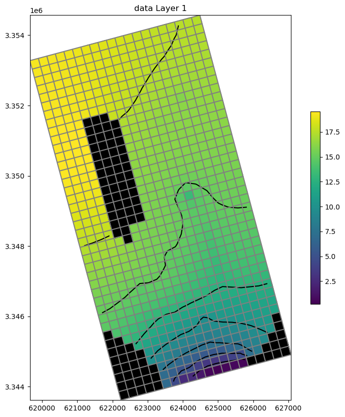
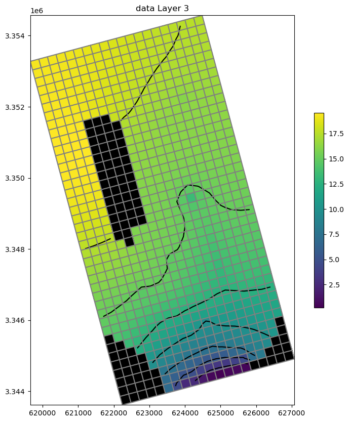
We can write the heads to a shapefile.
[16]:
h.to_shapefile(ml.model_ws / "freyburg_head.shp", verbose=False)
Finally, let’s make an animation of the simulated head over the time domain.
[17]:
f = plt.figure(figsize=(10, 10))
ax = plt.subplot(1, 1, 1, aspect="equal")
for t in h.times[0:-1:10]:
ax.cla()
ax.set_title(f"totim: {t:4.0f} days")
mm = flopy.plot.PlotMapView(model=ml, ax=ax)
mm.plot_array(h.get_data(totim=t), vmin=0, vmax=20)
mm.plot_grid(lw=0.5, color="black")
display(f)
clear_output(wait=True)
plt.pause(0.1);

[18]:
try:
# ignore PermissionError on Windows
temp_dir.cleanup()
except:
pass